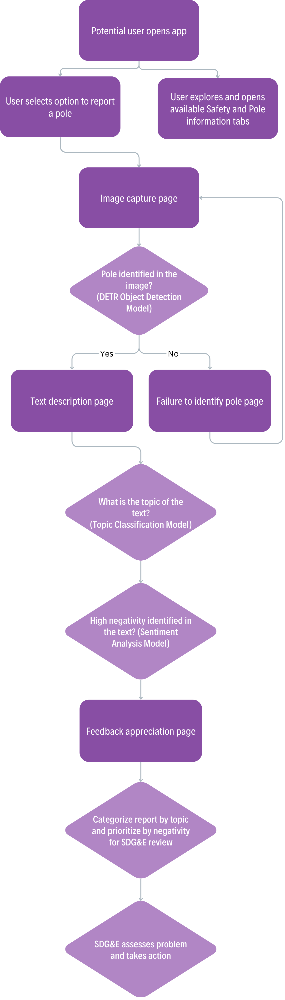

Design Principles
We kept strict design principles to guide our decision process for the customer’s experience, product’s functionality, the expert’s perspective.
- Safety First: Prioritize the safety of communities by swiftly addressing reported issues with electric poles to prevent potential hazards such as wildfires or power outages.
- Make UX as simple as possible so that they can report it quickly and efficiently Have steps that prioritize high-risk situations like having them call 9-1-1
- User Empowerment: Empower users to contribute to the safety and functionality of their communities by providing a platform for reporting issues with electric poles in a user-friendly manner.
- Makes communication between users and sdge more clear with images. Also accessible to smartphone users of any skill Efficiency and Transparency: Strive for efficient and transparent processes in evaluating reported issues, leveraging machine learning models to prioritize urgent cases and provide clear communication to utility teams Short reporting process. No login.
UI/UX Demonstration
The app is designed intentionally with big buttons and bright colors that lead a user to the next step. While also still being appealing as users would not want to use something that is hard to look at or boring.
Flow
We kept in mind that not every SDG&E customer is adept with their cell phones, especially apps. This is why we tried to keep it as simple as possible with only 3 major steps. Starting a report is as easy as pressing a button. Next take or upload an image of potentially concerning equipment making sure to capture the entire structure. Finally write a text description to describe conditions that aren’t seen in the image such as buzzing noises or sparks that weren’t seen in the photo. Accompanied by the location of the incident so SDG&E can keep track of the equipment.

After the report is sent it is categroized by topic and ranked based on the negativity detected in the text to show the most urgent messages first. From this SDG&E should assess the issues and take action.
Extra Considerations
Customers can make mistakes such as not capturing the full structure or uploading an image totally unrelated. This is addressed by the DeTr model which if presented with an image that lacks a pole, will inform the user to try again with another photo.
In the Figma display there is also a sidebar that presents users with multiple options. A page shows how to properly use the product including how to take the best photo and what to input in the text prompt. A page that represents a user feedback section where customers can describe issues with the app or recommendations on how to improve it. Also Education and About Us pages that would educate users on safety and wildfire concerns plus how we designed the product.